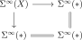

Every epimorphism in \(T\) is 0-connected, hence in particular an effective epimorphism.
Proof
We may assume that \(Y = *\) by passing to the slice topos: the forgetful functor \(T_{/Y} \to T\) preserves all colimits, hence preserves and detects epimorphisms. So we need to show: if \(X \to *\) is an epimorphism, then \(\tau_0 X\) is terminal.Since the suspension functor \(\Sigma^{\infty}\colon T \to \Sp(T)\) preserves colimits, it follows that the commutative square

is a pushout square, hence a pullback square by stability. It follows that the map \(\Sigma^{\infty}(X) \to \Sigma^{\infty}(*)\) is an isomorphism. The suspension functor factors as
where the first functor is the free commutative group functor and the second functor is the classifying spectrum functor which identifies commutative groups with connective spectra. By conservativity of \(\bbB^{\infty}\) we conclude that \(F^{\CGrp}(X) \iso F^{\CGrp}(*)\). Now, since the truncation functor \(\tau_0\colon T \to T_{\leq 0}\) commutes with finite products, it induces a functor \(\tau_0\colon \CGrp(T) \to \CGrp(T_{\leq 0})\). Since also the inclusion \(T_{\leq 0} \hookrightarrow T\) preserves finite products, it follows that \(\tau_0\) also commutes with the free commutative group construction, giving a commutative diagram as follows: In particular, we conclude that \(F^{\CGrp}(\tau_0 X) \iso F^{\CGrp}(*)\). To deduce that \(\tau_0 X = *\), note that for any \(0\)-truncated object \(X'\) the unit map \(X' \to F^{\CGrp}(X')\) is a monomorphism. Indeed, this is clear for \(T = \An\) (where \(F^{\CGrp}(X') = \Z[X']\) is the free abelian group generated by the set \(X'\)), thus also for any presheaf topos, and then finally for any left exact localization \(f^*\colon \PSh(C) \to T\) of a presheaf topos as \(f^*\) preserves monomorphisms and commutes with the adjunction \(T \rightleftarrows \CGrp(T)\). From the commutative diagram it follows that \(\tau_0 X \to *\) is a monomorphism in \(T_{\leq 0}\). Since \(\tau_0(-)\) preserves colimits, it is also an epimorphism. But then we are done, as in a classical topos, every monomorphism which is also an epimorphism is an isomorphism, see Lemma 5.10.